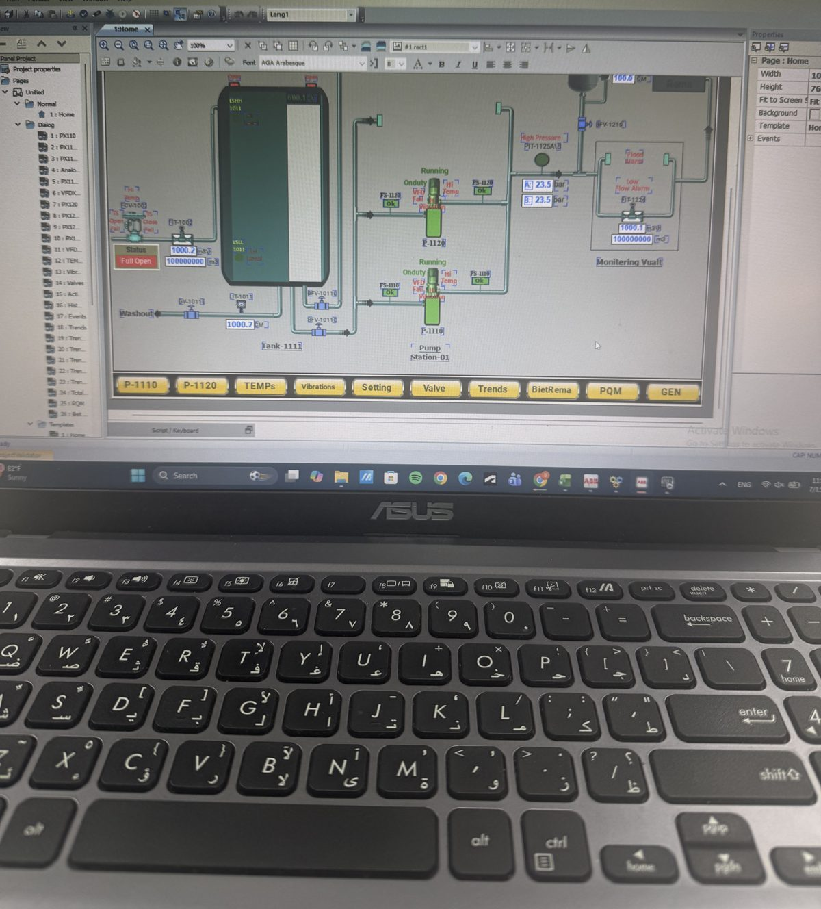
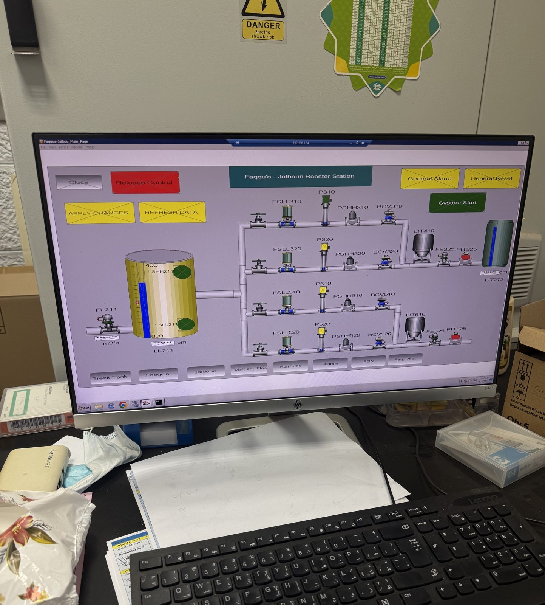
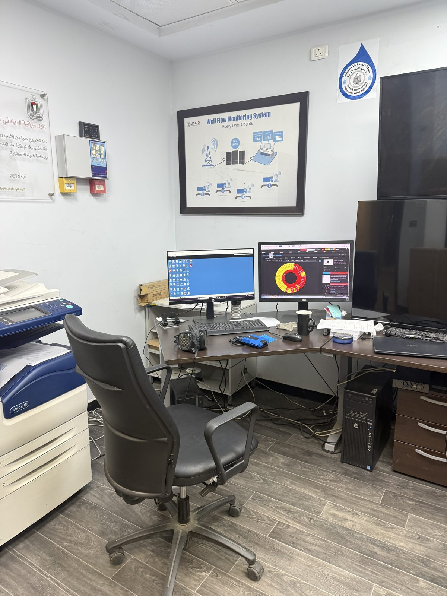

Mar 2026 – Oct 2026
Networking Intern · BCI
- Hands-on work with network configuration, infrastructure and monitoring.
- West Bank Water Department SCADA project, supervised by Iyad Nubani: developed HMI software in Control Maestro for a system monitoring over 40 water wells, and configured SCADA tags to map field sensor data into the HMI.
- Performed on-site server checks at the Water Department to verify SCADA connectivity and system operation.
Control Maestro · SCADA · HMI · Networking


